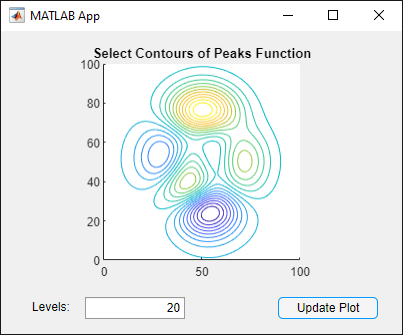
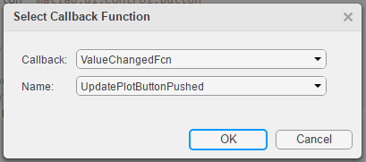
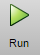

Use One Callback for Multiple App Designer Components
Sharing callbacks between components is useful when you want to offer multiple ways of doing something in your app. For example, your app can respond the same way when a user clicks a button or presses the Enter key in an edit field.
Example of a Shared Callback
This example shows how to create an app containing two UI components that share a callback. The app displays a contour plot with the specified number of levels. When the user changes the value in the edit field, they can press Enter or click the Update Plot button to update the plot.

In App Designer, drag an Axes component from the Component Library onto the canvas. Then make these changes:
Double-click the title, and change it to
Select Contours of Peaks Function.Double-click the X and Y axis labels, and press the Delete key to remove them.
Drag an Edit Field (Numeric) component below the axes on the canvas. Then make these changes:
Double-click the label next to the edit field and change it to
Levels:.Double-click the edit field and change the default value to
20.
Drag a Button component next to the edit field on the canvas. Then double-click its label and change it to
Update Plot.Add a callback function that executes when the user clicks the button. Right-click the Update Plot button and select Callbacks > Add ButtonPushedFcn callback.
App Designer switches to the Code View. Paste this code into the body of the
UpdatePlotButtonPushedcallback:Z = peaks(100); nlevels = app.LevelsEditField.Value; contour(app.UIAxes,Z,nlevels);
Next, share the callback with the edit field. In the Component Browser, right-click the
app.LevelsEditFieldcomponent and select Callbacks > Select existing callback. When the Select Callback Function dialog box displays, select UpdatePlotButtonPushed from the Name drop-down list.
Sharing this callback allows the user to update the plot after changing the value in the edit field and pressing Enter. Alternatively, they can change the value and press the Update Plot button.
Next, set the axes aspect ratio and limits. In the Component Browser, select the
app.UIAxescomponent. Then, make the following changes in the Axes tab:Set PlotBoxAspectRatio to
1,1,1.Set XLim and YLim to
0,100.
Click Run to save and run the app.
